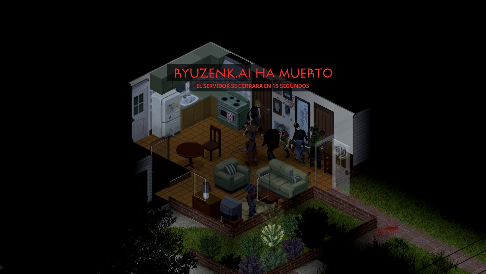

One Life Co-op
Project Zomboid Multiplayer Mod

¿Qué es One Life Co-op?
One Life Co-op es un mod cooperativo para Project Zomboid diseñado para convertir la supervivencia en una responsabilidad compartida.
Si cualquier jugador recibe una mordida genuina de un zombie o muere por cualquier causa, toda la partida entra en una cuenta regresiva y la sesión del Host se cierra automáticamente.
La idea es que la supervivencia del grupo dependa de todos.
¿Cómo funciona?
El mod selecciona un punto de aparición compartido para la partida. Todos los jugadores creados durante esa sesión utilizan ese mismo punto de spawn.
La partida continúa normalmente hasta que ocurre una de estas condiciones:
- Un jugador recibe una mordida genuina de un zombie.
- Un jugador muere por cualquier causa.
Cuando ocurre:
- Todos los jugadores reciben una advertencia.
- Se inicia una cuenta regresiva compartida de 10 segundos.
- Al finalizar, la sesión del Host se cierra automáticamente.
- La partida puede reiniciarse para comenzar una nueva run.
Sistema de mordidas y muerte
Se activa mediante
- Mordidas genuinas de zombies
- La muerte de cualquier jugador
No se activa mediante
- Arañazos
- Laceraciones
Spawn compartido
Todos los jugadores de una misma partida comparten un único punto de aparición seleccionado aleatoriamente.
El sistema utiliza el spawn nativo de Project Zomboid. No utiliza teletransporte posterior a la creación del personaje.
Arquitectura
Servidor (Lógica Principal)
- Detección de mordidas
- Detección de muertes
- Inicio del countdown
- Selección del spawn compartido
- Sincronización de advertencias
Cliente
- Recepción de eventos enviados por el servidor
- Visualización de advertencias del countdown
Tecnologías
- Lua - Lenguaje del mod
- Project Zomboid Event System
- Multiplayer Client / Server Architecture
- Server-authoritative Logic
- Steam Workshop - Distribución
¿Quieres jugarlo?
One Life Co-op está PUBLICADO Y DISPONIBLE en Steam Workshop. Puedes suscribirte, revisar el código fuente completo en GitHub y jugarlo en cooperativo con tu grupo.